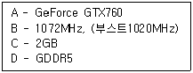

PC정비사-2급 (2015-07-26 기출문제)
1과목: PC유지보수
1. Windows 7 Professional 에서 "장치 관리자"를 통해서 할 수 있는 작업이 아닌 것은?
- 디스크 장치에 쓰기 캐싱 설정
- 장치 드라이버 업데이트
- DVD 지역 코드 변경
- 쿨러 제어를 통한 시스템 온도 조절
(정답률: 84%)

2. Windows 7 Professional 에서 복사하거나 잘라내기 한 내용이 임시 저장되는 영역으로 올바른 것은?
- 워드패드
- 클립보드
- 메모장
- 그림판
(정답률: 96%)
3. 디스크 조각 모음을 사용할 수 있는 드라이브는?
- CD-ROM 드라이브
- 로컬 하드디스크 드라이브
- 네트워크 드라이브
- 방향 전환된 가상 드라이브
(정답률: 88%)
4. 인터넷 익스플로러의 인터넷 옵션 메뉴에서 제공하고 있는 기본 기능이 아닌 것은?
- 글꼴이나 언어 설정
- 보안 수준 설정
- 인터넷 연결 방법 설정
- 홈페이지 소스 확인
(정답률: 67%)
5. 주기억 장치의 메모리 용량보다 큰 프로그램을 사용할 수 있는 메모리 이용 기법은?
- Cache Memory
- Virtual Memory
- Core Memory
- DMA
(정답률: 80%)
6. Windows 7 에서 프로그램을 삭제하려고 할 때, 잘못된 방법은?
- 제어판의 [프로그램 변경 또는 제거]에서 삭제한다.
- 해당 프로그램에서 제공하는 삭제프로그램으로 삭제한다.
- 해당 프로그램 폴더를 삭제한다.
- 프로그램 삭제 전용 응용 프로그램으로 삭제한다.
(정답률: 88%)
7. 매크로내에서 여러 개의 매크로를 호출할 때 사용되는 자료 구조 중 가장 효율적인 것은?
- QUEUE
- TREE
- STACK
- LINKED LIST
(정답률: 74%)
8. Bench Mark Test의 정의로 올바른 것은?
- Virus에 감염되기 쉬운 정도를 구분하기 위한 보안 점검으로 A, B, C, D 네 등급으로 나뉜다.
- 하드웨어나 소프트웨어의 개발 단계에서 상용화하기 전에 실시하는 제품 검사 작업으로, 선발된 잠재 고객으로 하여금 일정 기간 무료로 사용하게 한 후에 나타난 여러 가지 오류를 수정, 보완한다.
- 비교 대상을 두고 하드웨어나 소프트웨어의 성능을 비교 시험하고 평가하는 것을 말한다.
- System의 각 장치의 Error 발생 여부를 확인하는 것으로 시스템의 개발 초기 단계에서 이루어진다.
(정답률: 72%)
9. Windows 7 의 버전에 속하지 않는 것은?
- Home Premium
- Professional
- Datacenter Server Edition
- Thin PC
(정답률: 72%)
10. 일반 사용자 그룹으로 로그온한 후 명령 프롬프트에서 시스템 관리자로 프로그램을 실행하기 위해 필요한 명령어는?
- defrag
- runas
- guest
- administrator
(정답률: 76%)
11. 분산 처리 시스템에 관한 설명으로 가장 적절한 것은?
- 처리할 자료가 일정량이 될 때까지 모아서 한꺼번에 처리한다.
- 중앙 처리 장치 사용 기간을 돌아가면서 할당 받는다.
- 작업을 정의된 시간 안에 반드시 처리해야 하는 시스템에 적합하다.
- 여러 개의 분산된 데이터 저장장소와 처리기들을, 네트워크로 연결하여 서로 통신을 하면서 동시에 일을 처리한다.
(정답률: 88%)
12. 시스템복원 기능은 소프트웨어적 문제를 해결할 수 있다. 다음 항목 중 시스템 복원 기능을 이용하여 복원할 수 없는것은?
- 사용자용 문서 파일
- Windows용 시스템 파일
- Windows 응용 파일
- 레지스트리
(정답률: 76%)
13. 기본적으로 FAT32 디스크 파티션을 지원하지 않는 운영체제는?
- Windows 7
- Windows VISTA
- Windows XP
- Windows 3.1
(정답률: 81%)
14. Windows 7 의 Home Basic Edition에서 지원하지 않는 것은?
- FAT32 파일 시스템
- 다중 모니터 사용
- 다국어 언어팩 지원
- 바탕화면 창 관리자
(정답률: 81%)
15. Windows 7 의 레지스트리에 대한 설명 중 잘못된 것은?
- 텍스트 기반이며, 크기가 32KB를 넘지 못한다.
- 정렬된 계층구조를 가진다.
- HKey_Users키로 사용자별 정보를 지원한다.
- 원격지에서 관리와 시스템 정책을 할 수 있다.
(정답률: 80%)
2과목: PC운영체제
16. JEDEC(Joint Electron Device Engineering Council)에서 제정한 RAM의 규격으로 잘못된 것은?
- ODD
- DDR3
- RD-RAM
- SDR
(정답률: 83%)
17. L2 캐시에 대한 설명으로 잘못된 것은?
- CPU와 주기억 장치간의 데이터 병목 현상을 줄이기 위해 사용된다.
- 일반적으로 L2 캐시의 용량이 작을수록 컴퓨터의 수행 속도는 빨라진다.
- 컴퓨터 내의 캐시 메모리의 계층들이다.
- L1 캐시보다 약간 크고, CPU에 사용되는 두 번째 레벨이다.
(정답률: 85%)
18. PCI BUS의 특징 중 잘못된 것은?
- Peripheral Component Interface의 약자
- Plug & Play 지원이 안된다.
- Device를 최대 10개까지 접속 가능
- 32Bit/64Bit Data폭 지원
(정답률: 83%)
19. 키보드의 인터페이스로 잘못된 것은?
- AT
- PS/2
- USB
- DMA
(정답률: 79%)
20. PC의 버스 인터페이스 방식이 아닌 것은?
- ISA
- PCI-E
- AGP
- FPGA
(정답률: 65%)
21. CPU가 메모리에 데이터 요청 신호 후 전송될 때까지의 지연시간을 의미하는 것은?
- Seek Time
- Transmission Time
- Wait Time
- Access Time
(정답률: 77%)
22. 디스플레이 어댑터(adapter)의 구성 요소 중 디지털신호를 모니터에서 필요한 아날로그 신호로 변환시켜 주는 장치는?
- RAMDAC
- 피처 커넥터(feature connector)
- VGA 바이오스 롬
- 비디오 램(video RAM)
(정답률: 70%)
23. CPU 중 듀얼 코어가 아닌 것은?
- 인텔 i3-3220
- 인텔 G1610
- AMD 애슬론64X-2
- AMD FX4100
(정답률: 68%)
24. CD-ROM 드라이브와 DVD-ROM 드라이브의 1배속을 표시한 것으로 올바른 것은?
- 150KB/s, 700KB/s
- 135KB/s, 1350KB/s
- 150KB/s, 1350KB/s
- 135KB/s, 700KB/s
(정답률: 78%)
25. 다음은 어느 회사의 그래픽 카드 성능에 대한 내용이다. 각각의 내용에 대한 의미를 A, B, C, D 순서대로 올바로 설명한 것은?

- 칩셋 이름 - 코어 클럭 - 비디오램 용량 - 비디오램 타입
- 비디오램 타입 - 램댁 속도 - 비디오램 용량 - 칩셋 이름
- 비디오램 타입 - 비디오램 용량 - 램댁 속도 - 칩셋 이름
- 칩셋 이름 - 비디오램 용량 - 램댁 속도 - 비디오램 타입
(정답률: 82%)
26. RF방식의 마우스에 대한 설명으로 올바른 것은?
- 방해물이 있으면 전혀 통과하지 못하고 10M이내의 수신거리에서만 사용가능하다.
- 무선 입출력 장치는 항상 같은 방향으로 마주 보고 있어야한다.
- 무선주파수 방식이다.
- IR방식이라고도 한다.
(정답률: 72%)
27. 물리적인 하나의 하드디스크를 용량에 따라 여러 개의 논리적 하드디스크 드라이브로 분할하는 것을 뜻하는 용어는?
- 스핀들 (Spindle)
- 로우레벨 포맷(Low-level Format)
- 파티션(Partition)
- 하드디스크 인터리브 (Hard Disk Interleave)
(정답률: 92%)
28. 토너 기반의 프린터로 Fuser 라는 고온 고압의 정착기를 통과하면서 토너 가루가 완전히 용지에 정착이 되어 인쇄되는 프린터의 종류는?
- 도트 매트릭스 프린터
- 감열식 프린터
- 레이저 프린터
- 잉크젯 프린터
(정답률: 78%)
29. CPU의 주요 기능에 대한 설명 중 잘못된 것은?
- 버스 인터페이스 유닛 : CPU와 주기억장치를 비롯한 외부 장치와 연결되는 통로
- 컨트롤 유닛 : CPU 내부에 전달되는 명령어를 해석하여 ALU가 정확히 연산을 수행하도록 컨트롤
- 데이터 캐시 : 십진법 단위로 쪼갤 수 없는 소수점 이하의 숫자를 처리
- 디코딩 유닛 : ALU가 이해할 수 있는 명령으로 바꾸어 줌
(정답률: 73%)
30. 인터레이스 모드 모니터에서 주사율과 수직 주파수간의 관계는?
- 주사율 = 수직 주파수
- 주사율 = 수직 주파수/2
- 주사율 = 수직 주파수*2
- 주사율 = 수직 주파수/3
(정답률: 79%)
3과목: PC주변기기
31. 스캐너로 입력받은 문서의 내용을 텍스트로 변경하는 기기를 나타내는 용어는?
- OCR
- 디더링
- 캡처
- CAD
(정답률: 78%)
32. CPU가 CAS/RAS 에 신호를 보내어 메모리의 정보가 도착할 때까지의 시간을 나타내는 용어는?
- Lead
- Delay
- Latency
- Integrity
(정답률: 79%)
33. 컴퓨터뿐만 아니라 각종 전자기기에서 발생하는 인체에 유해한 파장인, 전자파를 규제하기 위한 규격으로 잘못된 것은?
- VDT (Video Display Terminal)
- TCO (The Swedish Confederation of Professional Employees)
- FCC(Federal Communication Committee)
- CE(Certification for the European-union)
(정답률: 72%)
34. 구형 펜티엄4 PC를 i3-듀얼코어 PC 로 업그레이드 하려고 할 때, 고려해야 될 사항으로 잘못된 것은?
- 메인보드 CPU 소켓의 호환 여부를 확인하여 호환되지 않을 경우 메인보드를 교체하여야 한다.
- 펜티엄4의 AGP 2배속 지원 카드는 소켓 1150 메인보드에서 AGP 8배속을 지원하는 경우 그대로 장착해 사용이 가능하다.
- PS/2 나 EDIE 저장 장치를 사용하기 위해서는 변환 젠더가 필요할 수 있다.
- 기존에 사용하던 USB 무선랜카드는 그대로 장착해 사용이 가능하다.
(정답률: 68%)
35. 하드디스크 문제로 인하여 데이터가 손실될 경우를 대비하는 기능으로 자료를 안전하게 보관하도록 해 주는 시스템 도구는?
- 하드디스크 백업과 복원
- 디스크 조각 모음
- 디스크 검사
- 디스크 공간 늘림
(정답률: 80%)
36. 케이스 전면에 있는 HDD LED가 정상적으로 연결되어 있을 때 확인 할 수 있는 것은?
- HDD 파티션 설정 유무
- HDD MASTER/SLAVE 설정
- HDD 회전속도
- HDD 작동 유무
(정답률: 72%)
37. 하드디스크의 NCQ에 대한 설명으로 잘못된 것은?
- 인텔 메인보드에서는 ICH6 이상의 칩셋을 사용한 메인보드가 필요하다.
- CMOS 셋업에서 ACHI 모드로 설정해야 한다.
- E-IDE 방식의 하드디스크가 필요하다.
- NCQ란 하드디스크의 입출력 요청을 우선 큐에 보관한 다음 전체 헤드의 움직임을 최소화 할 수 있도록 요청의 순서를 재배열한 후 실행하는 방식이다.
(정답률: 61%)
38. PnP의 발전된 형태로서 Windows 7 Professional 에서 운영 중인 시스템의 전원을 끄지 않은 상태에서 장치나 부품을 교체해도 시스템에서 바로 인식하는 기술은?
- Hot Swap
- IDE
- PCI
- ACI
(정답률: 77%)
39. 컴퓨터를 사용하는 도중 모니터 화면이 일그러져 나오거나 일부 색이 표시가 되지 않는 등, 정상적으로 나오지 않을 때 점검해야 될 부분으로 잘못된 것은?
- 모니터 데이터 케이블의 연결 상태를 확인한다.
- BIOS 설정의 모니터 항목을 확인한다.
- 그래픽카드의 이상 유무를 확인한다.
- 모니터의 이상 유무를 확인한다.
(정답률: 71%)
40. PC3-10600 등의 빠른 전송 대역폭을 가지고 있어 64비트 연산에 적합한 메모리는?
- DDR1 SDRAM
- DDR2 SDRAM
- DDR3 SDRAM
- RDRAM
(정답률: 80%)
41. ‘DISK BOOT FAILURE, INSERT SYSTEM DISK AND PRESS ENTER’ 에러 메시지가 나타날 때의 원인에 따른 해결방법 중 잘못된 것은?
- 부팅할 수 없는 디스켓이 플로피디스크 드라이브에 들어있는 경우, 디스켓을 빼고 부팅을 시도한다.
- 시스템 파일이 손상된 경우, 시스템 파일을 복구한다.
- 부팅 순서가 잘못 설정된 경우, 파티션을 재설정한다.
- 부팅 하드디스크와 메인보드간의 연결 케이블이 헐거워지거나 빠진 경우에 발생 할 수 있으므로 케이블을 제 설정한다.
(정답률: 62%)
42. Award BIOS의 STANDARD CMOS SETUP 내용 중 Halt on에 대한 설명 중 잘못된 것은?
- No error : 어떤 에러가 발생해도 POST(power on self test)를 계속 진행한다.
- All error : 바이오스가 에러 검출 시 POST를 중지하고 알려준다.
- All but Keyboard : 키보드와 디스크 오류에 대해서만 POST를 중지한다.
- All but Diskette : 디스크 오류에 대해서만 POST를 중지한다.
(정답률: 71%)
43. 하드디스크를 RAID로 구성하고자 할때 확인해야 하는 것은?
- 모니터
- 주기억장치 타입
- 메인보드 지원유무
- IRQ 설정
(정답률: 74%)
44. 시스템의 부팅 속도가 느려지는 원인으로 잘못된 것은?
- 램(RAM)에 기록된 파일의 단편화 심화
- 하드디스크 파일의 단편화 심화
- CMOS Setup에서의 Cache가 disable로 설정
- 바이러스 감염
(정답률: 63%)
45. 각종 모니터의 조정검사 및 수리에 적합한 시험 도형을 만들어 내는 발생기는?
- Pattern Generator
- Color Analyzer
- DVM(Dalvik virtual machine)
- Oscilloscope
(정답률: 65%)
4과목: PC네트워크
46. OSI 7 계층의 구조를 순서대로 (하부구조부터) 바르게 나열한 것은?
- 네트워크→ 데이터 링크→ 물리→ 세션→ 표현 → 응용→ 전송
- 응용→ 표현→ 세션→ 물리→ 데이터 링크→ 전송→ 네트워크
- 세션→ 표현→ 물리→ 응용→ 전송→ 데이터 링크→ 네트워크
- 물리→ 데이터 링크→ 네트워크→ 전송 → 세션→ 표현→ 응용
(정답률: 85%)
47. Router에 대한 설명과 거리가 먼 것은?
- 동일한 전송 프로토콜을 사용하는 분리된 네트워크를 연결해 준다.
- 알고리즘에 따라 자동으로 경로가 결정된다.
- 메시지 형식 변화, 문자코드 변환, 주소 변환 등의 기능을 한다.
- 여러 경로 중 가장 효율적인 경로를 선택하여 패킷을 보낸다.
(정답률: 68%)
48. 전송 매체의 특성 중 Fiber Optics에 해당하는 것은?
- 전력 손실이 적고 전자기적 간섭이 없다.
- 수 km이상 전송 시 감쇠 현상성이 높아서 Repeater를 사용해야 한다.
- 여러 라인의 묶음으로 사용하면 간섭 현상을 줄일 수 있다.
- 선을 구성하는 재료는 대부분 구리를 사용한다.
(정답률: 61%)
49. 네트워크 장비의 설명으로 잘못된 것은?
- Bridge : OSI 참조 모델의 데이터 링크 계층에서 동작하고 두 세그먼트를 연결해 주는 장비이다.
- Router : 서로 상이한 구조를 갖는 망들을 연결할 수 있는 기능을 제공하며 OSI 계층 구조의 네트워크 계층에서 동작한다.
- Repeater : 2개 이상의 동일한 LAN 사이를 연결하여 네트워크 범위를 확장하고 스테이션간의 거리를 확장한다.
- Switch : 데이터의 전기적인 신호를 재생하고 MAC주소에 대해 필터링 기능을 수행한다.
(정답률: 69%)
50. 다음 중 IP주소 구조에 대한 설명 중 잘못된 것은?
- Class A: 주소범위 0.0.0.0 ∼ 127.0.0.0
- Class B: 주소범위 128.0.0.1 ∼ 191.255.255.254
- Class C: 주소범위 192.0.0.1 ∼ 223.255.255.254
- Class D: 주소범위 224.0.0.0 ∼ 239.255.255.255
(정답률: 77%)